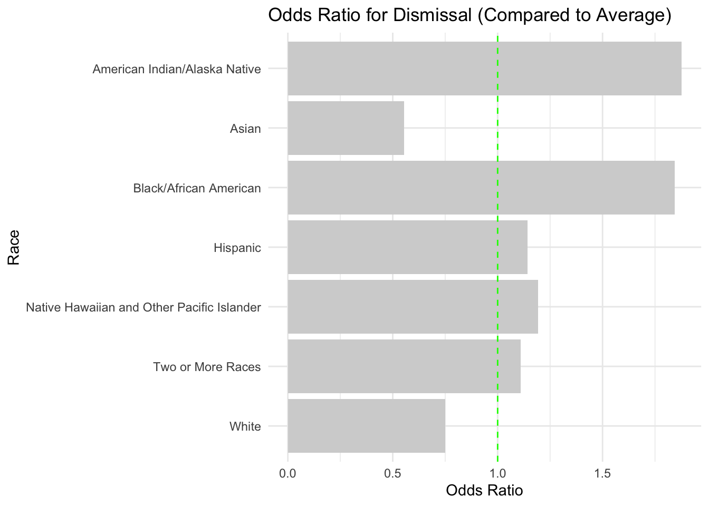

Attaching package: 'kableExtra'
The following object is masked from 'package:dplyr':
group_rows
library(tinytex)library(janitor)
Attaching package: 'janitor'
The following objects are masked from 'package:stats':
chisq.test, fisher.test
library(tidylog)
Attaching package: 'tidylog'
The following objects are masked from 'package:gtsummary':
mutate, select
The following objects are masked from 'package:dplyr':
add_count, add_tally, anti_join, count, distinct, distinct_all,
distinct_at, distinct_if, filter, filter_all, filter_at, filter_if,
full_join, group_by, group_by_all, group_by_at, group_by_if,
inner_join, left_join, mutate, mutate_all, mutate_at, mutate_if,
relocate, rename, rename_all, rename_at, rename_if, rename_with,
right_join, sample_frac, sample_n, select, select_all, select_at,
select_if, semi_join, slice, slice_head, slice_max, slice_min,
slice_sample, slice_tail, summarise, summarise_all, summarise_at,
summarise_if, summarize, summarize_all, summarize_at, summarize_if,
tally, top_frac, top_n, transmute, transmute_all, transmute_at,
transmute_if, ungroup
The following objects are masked from 'package:tidyr':
drop_na, fill, gather, pivot_longer, pivot_wider, replace_na,
separate_wider_delim, separate_wider_position,
separate_wider_regex, spread, uncount
The following object is masked from 'package:stats':
filter
library(sjPlot)
Learn more about sjPlot with 'browseVignettes("sjPlot")'.
library(lme4)
Loading required package: Matrix
Attaching package: 'Matrix'
The following objects are masked from 'package:tidyr':
expand, pack, unpack
Attaching package: 'lme4'
The following object is masked from 'package:rio':
factorize
Attaching package: 'scales'
The following object is masked from 'package:purrr':
discard
The following object is masked from 'package:readr':
col_factor
X race exit_total attempts_to_contact_unsuccessful proportion
1 1 AM 23783 3262.00 13.715679
2 2 AS 146252 6559.00 4.484725
3 3 BL 415873 56155.00 13.502920
4 4 HI 905971 79951.00 8.824896
5 5 MU 135841 11676.00 8.595343
6 6 PI 10654 977.00 9.170265
7 7 WH 1672185 99922.00 5.975535
8 8 All Race Average 472937 36928.86 7.808409
3/29/25: This following chunks don’t run (ChatGPT fail), but could be a great one for functional programming class ideas?
# ChatGPT: # 1) library(vcd) # 2) Define function to compare row i with the Average row (row 8) # compare_to_average <- function(i) {# 3) extract the two rows (as a 2x2 matrix)# temp_table <- rbind(us_data_DQ_proportion_w_average[i, 2:3], # us_data_DQ_proportion_w_average[8, 2:3])# compute odds ratio # or <- oddsratio(as.matrix(temp_table), log = FALSE)#return as data frame # data.frame(race = us_data_DQ_proportion_w_average[i, "race"], # OddsRatio = or$measure[1])}
#The $ operator in R is used to access a specific column of a data frame (or a named list). It's one of the most common and useful operators in R.us_data_DQ_proportion_w_average$OtherExits <- us_data_DQ_proportion_w_average$exit_total - us_data_DQ_proportion_w_average$attempts_to_contact_unsuccessful
Trying to run each of the Odds Ratio combo by hand using us_data_DQ_proportion_w_average df, but learned that for Odds Ratio, I have to use contingency table of Dismissal vs OTHER EXITS. Oops. See above for a new df of dismissal but with a new column.
library(vcd)# Row 1 = Group 1, Row 8 = Average# a <- us_data_DQ_proportion_w_average[1, "attempts_to_contact_unsuccessful"]# b <- us_data_DQ_proportion_w_average[1, "OtherExits"]# c <- us_data_DQ_proportion_w_average[8, "attempts_to_contact_unsuccessful"]# d <- us_data_DQ_proportion_w_average[8, "OtherExits"]# 2x2 table# temp_table <- matrix(c(a, b, c, d), nrow = 2, byrow = TRUE)# Check table# print(temp_table)# Calculate odds ratio# oddsratio(temp_table, log = FALSE)
Calculating one Odds Ratio by one but using the us_race_3cols_8rows to minimize my pain time
library(vcd)# Example: Group 1 vs Average (row 1 vs row 8)# temp_table <- as.matrix(rbind(us_race_3cols_8rows[1, c("Dismissed", "OtherExits")],# us_race_3cols_8rows[8, c("Dismissed", "OtherExits")]))#oddsratio(temp_table, log = TRUE)# THIS ONLY RETURNS THE ODDS RATIO SO I"M SWTICHING TO EPITOOLS WITH WALD METHOD
library(epitools)# Example: Group 1 vs Average (row 1 vs row 8)temp_table <-as.matrix(rbind(us_race_3cols_8rows[1, c("Dismissed", "OtherExits")], us_race_3cols_8rows[8, c("Dismissed", "OtherExits")]))# "wald" is the default method for odds ratio with confidence intervals. epitools::oddsratio(temp_table, method ="wald")
Warning in fisher.test(xx): 'x' has been rounded to integer: Mean relative
difference: 6.041276e-07
Warning in fisher.test(x, or = or, alternative = "l"): 'x' has been rounded to
integer: Mean relative difference: 6.041276e-07
Warning in fisher.test(x, or = or, alternative = "g"): 'x' has been rounded to
integer: Mean relative difference: 6.041276e-07
$data
Dismissed OtherExits Total
1 3262.00 20521.0 23783
8 36928.86 436008.1 472937
Total 40190.86 456529.1 496720
$measure
NA
odds ratio with 95% C.I. estimate lower upper
1 1.000000 NA NA
8 1.876783 1.806008 1.950332
$p.value
NA
two-sided midp.exact fisher.exact chi.square
1 NA NA NA
8 0 2.436324e-198 4.500007e-233
$correction
[1] FALSE
attr(,"method")
[1] "Unconditional MLE & normal approximation (Wald) CI"
Results from above - Row 1 AM vs Average:
odds ratio with 95% C.I. estimate lower upper 1.876783 1.806008 1.950332
Warning in fisher.test(xx): 'x' has been rounded to integer: Mean relative
difference: 6.041276e-07
Warning in fisher.test(x, or = or, alternative = "l"): 'x' has been rounded to
integer: Mean relative difference: 6.041276e-07
Warning in fisher.test(x, or = or, alternative = "g"): 'x' has been rounded to
integer: Mean relative difference: 6.041276e-07
$data
Dismissed OtherExits Total
2 6559.00 139693.0 146252
8 36928.86 436008.1 472937
Total 43487.86 575701.1 619189
$measure
NA
odds ratio with 95% C.I. estimate lower upper
2 1.0000000 NA NA
8 0.5543598 0.5396222 0.5694998
$p.value
NA
two-sided midp.exact fisher.exact chi.square
2 NA NA NA
8 0 0 0
$correction
[1] FALSE
attr(,"method")
[1] "Unconditional MLE & normal approximation (Wald) CI"
Row 2: AS vs Average: odds ratio with 95% C.I. estimate lower upper 0.5543598 0.5396222 0.5694998
Warning in fisher.test(xx): 'x' has been rounded to integer: Mean relative
difference: 6.041276e-07
Warning in fisher.test(x, or = or, alternative = "l"): 'x' has been rounded to
integer: Mean relative difference: 6.041276e-07
Warning in fisher.test(x, or = or, alternative = "g"): 'x' has been rounded to
integer: Mean relative difference: 6.041276e-07
$data
Dismissed OtherExits Total
3 56155.00 359718.0 415873
8 36928.86 436008.1 472937
Total 93083.86 795726.1 888810
$measure
NA
odds ratio with 95% C.I. estimate lower upper
3 1.000000 NA NA
8 1.843126 1.817768 1.868837
$p.value
NA
two-sided midp.exact fisher.exact chi.square
3 NA NA NA
8 0 0 0
$correction
[1] FALSE
attr(,"method")
[1] "Unconditional MLE & normal approximation (Wald) CI"
Row 3: BL vs Average: odds ratio with 95% C.I. estimate lower upper 1.843126 1.817768 1.868837
Warning in fisher.test(xx): 'x' has been rounded to integer: Mean relative
difference: 6.041276e-07
Warning in fisher.test(x, or = or, alternative = "l"): 'x' has been rounded to
integer: Mean relative difference: 6.041276e-07
Warning in fisher.test(x, or = or, alternative = "g"): 'x' has been rounded to
integer: Mean relative difference: 6.041276e-07
$data
Dismissed OtherExits Total
4 79951.00 826020.0 905971
8 36928.86 436008.1 472937
Total 116879.86 1262028.1 1378908
$measure
NA
odds ratio with 95% C.I. estimate lower upper
4 1.000000 NA NA
8 1.142779 1.12817 1.157576
$p.value
NA
two-sided midp.exact fisher.exact chi.square
4 NA NA NA
8 0 4.437863e-93 5.310336e-92
$correction
[1] FALSE
attr(,"method")
[1] "Unconditional MLE & normal approximation (Wald) CI"
Row 4: HI vs Average: odds ratio with 95% C.I. estimate lower upper 1.142779 1.12817 1.157576
Warning in fisher.test(xx): 'x' has been rounded to integer: Mean relative
difference: 6.041276e-07
Warning in fisher.test(x, or = or, alternative = "l"): 'x' has been rounded to
integer: Mean relative difference: 6.041276e-07
Warning in fisher.test(x, or = or, alternative = "g"): 'x' has been rounded to
integer: Mean relative difference: 6.041276e-07
$data
Dismissed OtherExits Total
5 11676.00 124165.0 135841
8 36928.86 436008.1 472937
Total 48604.86 560173.1 608778
$measure
NA
odds ratio with 95% C.I. estimate lower upper
5 1.000000 NA NA
8 1.110257 1.086377 1.134662
$p.value
NA
two-sided midp.exact fisher.exact chi.square
5 NA NA NA
8 0 8.413752e-21 4.04019e-21
$correction
[1] FALSE
attr(,"method")
[1] "Unconditional MLE & normal approximation (Wald) CI"
Row 5: MU vs Average: odds ratio with 95% C.I. estimate lower upper 1.110257 1.086377 1.134662
Warning in fisher.test(xx): 'x' has been rounded to integer: Mean relative
difference: 6.041276e-07
Warning in fisher.test(x, or = or, alternative = "l"): 'x' has been rounded to
integer: Mean relative difference: 6.041276e-07
Warning in fisher.test(x, or = or, alternative = "g"): 'x' has been rounded to
integer: Mean relative difference: 6.041276e-07
$data
Dismissed OtherExits Total
6 977.00 9677.0 10654
8 36928.86 436008.1 472937
Total 37905.86 445685.1 483591
$measure
NA
odds ratio with 95% C.I. estimate lower upper
6 1.000000 NA NA
8 1.192017 1.115164 1.274168
$p.value
NA
two-sided midp.exact fisher.exact chi.square
6 NA NA NA
8 4.334638e-07 4.389407e-07 2.315676e-07
$correction
[1] FALSE
attr(,"method")
[1] "Unconditional MLE & normal approximation (Wald) CI"
Row 6: PI vs Average: odds ratio with 95% C.I. estimate lower upper 1.192017 1.115164 1.274168
Warning in fisher.test(xx): 'x' has been rounded to integer: Mean relative
difference: 6.041276e-07
Warning in fisher.test(x, or = or, alternative = "l"): 'x' has been rounded to
integer: Mean relative difference: 6.041276e-07
Warning in fisher.test(x, or = or, alternative = "g"): 'x' has been rounded to
integer: Mean relative difference: 6.041276e-07
$data
Dismissed OtherExits Total
7 99922.00 1572263.0 1672185
8 36928.86 436008.1 472937
Total 136850.86 2008271.1 2145122
$measure
NA
odds ratio with 95% C.I. estimate lower upper
7 1.0000000 NA NA
8 0.7503513 0.7411056 0.7597124
$p.value
NA
two-sided midp.exact fisher.exact chi.square
7 NA NA NA
8 0 0 0
$correction
[1] FALSE
attr(,"method")
[1] "Unconditional MLE & normal approximation (Wald) CI"
Row 7: WH vs Average: odds ratio with 95% C.I. estimate lower upper 0.7503513 0.7411056 0.7597124
kable(us_race_odds_ratio_vs_average, caption ="Odds Ratio: National Average")
Odds Ratio: National Average
Race
Odds_Ratio
ci_lower
ci_upper
American Indian/Alaska Native
1.8767830
1.8060080
1.9503320
Asian
0.5543598
0.5396222
0.5694998
Black/African American
1.8431260
1.8177680
1.8688370
Hispanic
1.1427790
1.1281700
1.1575760
Native Hawaiian and Other Pacific Islander
1.1920170
1.1151640
1.2741680
Two or More Races
1.1102570
1.0863770
1.1346620
White
0.7503513
0.7411056
0.7597124
# Flipped the order on X axis AND added the line for "1" ggplot(us_race_odds_ratio_vs_average, aes(x =reorder(Race, Odds_Ratio), y = Odds_Ratio)) +geom_col(fill ="lightgray") +# this is now fixedcoord_flip() +geom_hline(yintercept =1, linetype ="dashed", color ="green") +scale_x_discrete(limits =rev(sort(unique(us_race_odds_ratio_vs_average$Race)))) +labs(title ="Odds Ratio for Dismissal (Compared to Average)", x ="Race", y ="Odds Ratio" ) +theme_minimal()

Final Forrest Plot for US RACE against national average!!! Congratulations, Maiko 🎉㊗🥳
ggplot(us_race_odds_ratio_vs_average, aes(x =reorder(Race, Odds_Ratio), y = Odds_Ratio)) +geom_point(size =4, color ="skyblue") +# OR pointgeom_errorbar(aes(ymin = ci_lower, ymax = ci_upper), width =0.2) +# CI barsgeom_text(aes(label =round(Odds_Ratio, 2)), vjust =-0.8, size =3.5, family ="Times New Roman") +geom_hline(yintercept =1, linetype ="dashed", color ="green") +# Reference linecoord_flip() +# Flip axesscale_x_discrete(limits =rev(sort(unique(us_race_odds_ratio_vs_average$Race)))) +labs(title ="Odds Ratio for Dismissal", x ="Group", y ="Odds Ratio" ) +theme_minimal() +theme(text =element_text(family ="Times New Roman"),axis.text.x =element_text(size =10),axis.text.y =element_text(size =10),plot.title =element_text(size =12, face ="bold") )